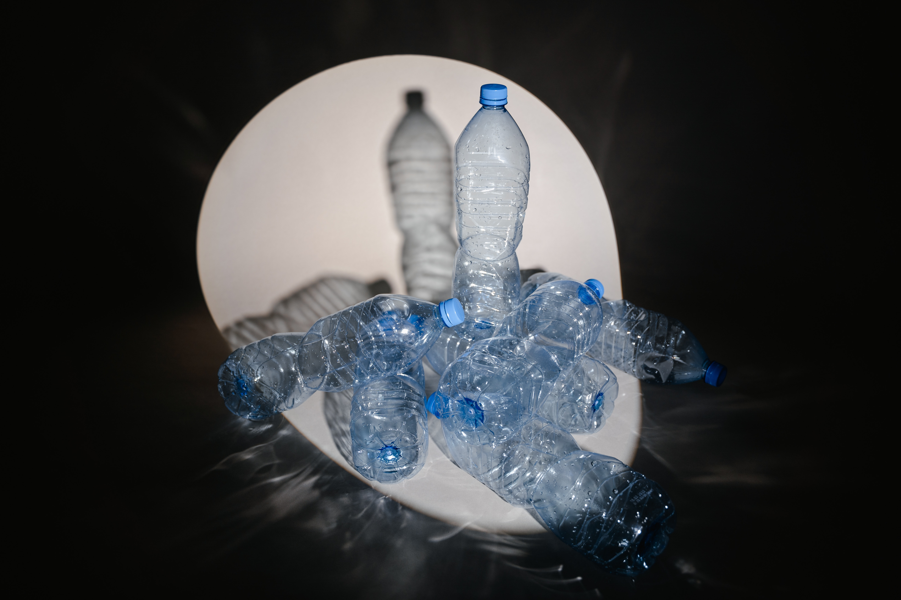

Water purification
Water, undeniably, is the lifeblood of our planet.
Essential for a myriad of biological, industrial, and domestic purposes, it's increasingly becoming scarce.
The United Nations and the World Resources Institute highlight a pressing crisis: water scarcity, exacerbated by urbanization, industrialization, and population growth.
This scarcity poses a significant challenge for humanity.
Capacitive Deionization (CDI):
A revolutionary technology in water purification.
CDI operates through low-voltage charged porous electrodes in water, attracting solvated ions.
Reversing the charges releases these ions, allowing for repeated purification cycles.
Recent advancements, including ion-exchange membranes, have dramatically enhanced CDI's efficiency.
Its lower energy requirement and higher clean water recovery rate position CDI as a formidable alternative to traditional purification methods.
- My Contributions:
- Developing materials that balance performance enhancement with cost-effectiveness.
- Innovating production lines for speed and affordability.

Plastic waste depolymerization
Since 1907, plastics have revolutionized our lives, permeating every aspect from electronics to packaging. However, the durability and ubiquity of plastics have led to an environmental crisis, with massive amounts of waste endangering ecosystems. Amidst this, scientists, including our team, are urgently addressing the issue, supported by evolving government policies. In particular I focused on depolymerizing polyethylene terephthalate (PET). By breaking down PET into its constituent monomers, we aim to transform plastic waste into reusable resources. This process is crucial for sustainable recycling and waste management.
- My Contributions:
- Innovating in cost-effective and waste-reducing recycling methodologies.
- Enhancing the yield and purity of reusable monomers, aligning lab-scale efficiency with industrial-scale needs.